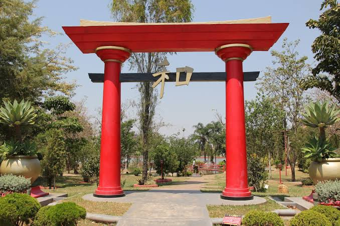
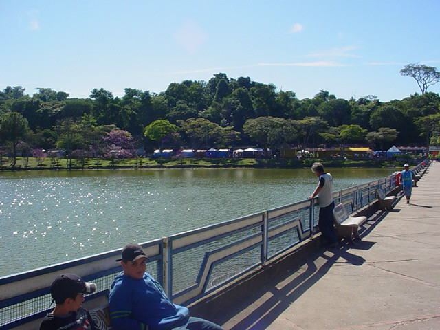
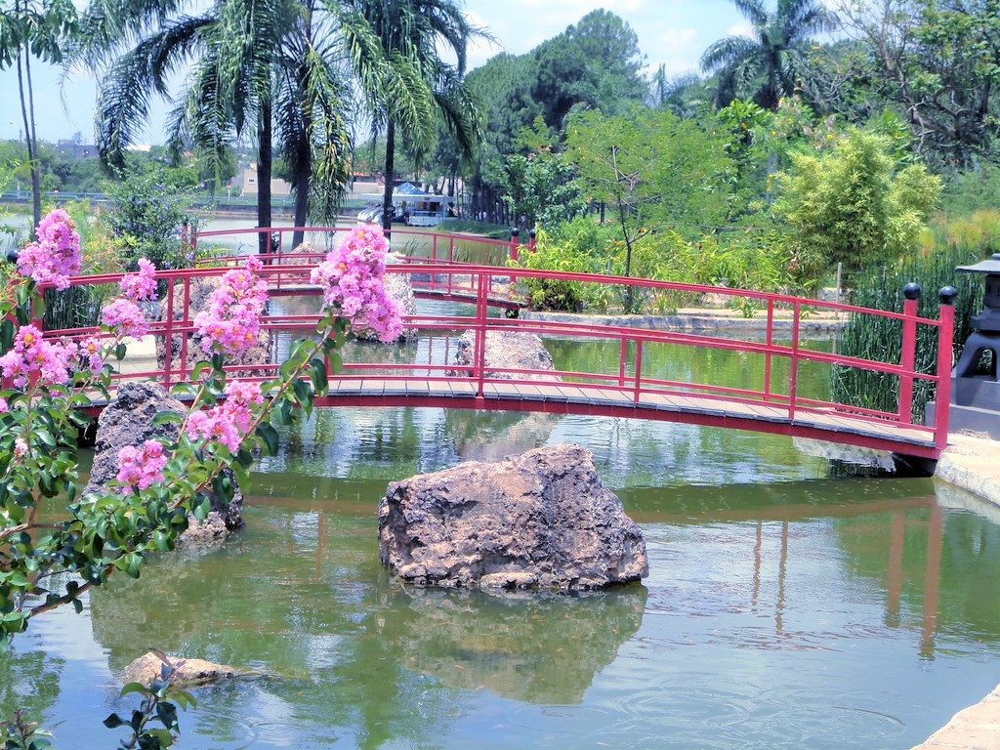
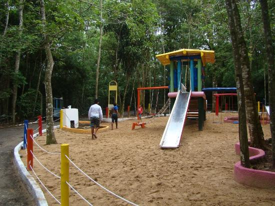
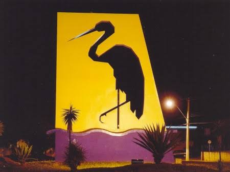

Local 1
Conheça este espaço turístico de Garça.
Garça é um município localizado no interior do estado de São Paulo, conhecido como Cidade Jardim. A cidade possui espaços verdes, áreas de lazer e atrações que fazem parte de sua história e de sua identidade.
Neste site, você poderá conhecer alguns dos principais pontos turísticos de Garça, descobrir lugares para visitar e encontrar sugestões de passeios pela cidade.

Conheça este espaço turístico de Garça.

Descubra mais um lugar para visitar na cidade.

Explore os espaços de lazer de Garça.


